How Spend Curve works
A media planner that answers one question honestly: at this budget, on these rates, what does the next rupee actually buy? This guide walks every lever, what it changes, and where the numbers come from.
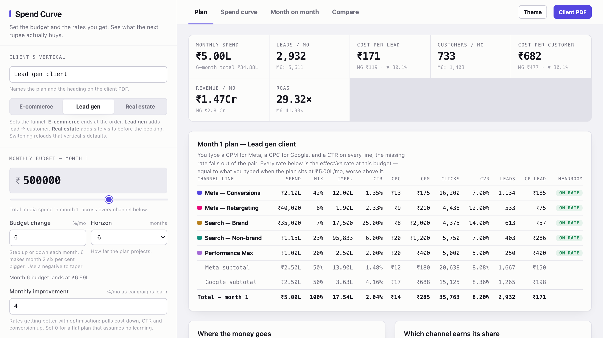
Start here
The one idea
Most media plans are a spreadsheet where you type a budget, multiply by a rate you found somewhere, and read off a number of leads. That plan is always wrong in the same direction: it assumes the rate you quoted holds at any budget. It doesn't. Buy more of an audience and you buy it more expensively.
Spend Curve models that. You tell it two things:
- The rates you researched — a CPM for Meta, a CPC for Google, a click-through rate and a conversion rate on every line.
- The budget those rates were true at — the anchor. Usually the budget you had in mind when you pulled the benchmarks.
Run the plan at the anchor and it uses your rates untouched. Run it above the anchor and every rate degrades — costs climb, click-through slips, the extra audience converts worse — each channel at its own pace. That degradation is the whole product. It's what turns "₹10L buys twice as many leads as ₹5L" into an honest number.
Search brand barely degrades: you're capped by how many people type your name, not by price. Meta retargeting degrades fastest: the warm pool is small and you exhaust it. The tool knows the difference and applies it per line.
Five minutes
Quick start
- Type the client name and pick the vertical. That sets the funnel shape and loads sensible Indian-market defaults you can edit.
- Type the monthly budget. This also sets the anchor, so the plan starts "on rate".
- Fill in unit economics — order value or deal value, the close rate, and the target cost you won't cross.
- Open each channel line and put in the rates you researched: CPM + CTR for Meta lines, CPC + CTR for Google lines, plus the click-to-conversion rate.
- Read the Plan tab, then the Spend curve tab. The curve tells you where this mix stops paying for itself.
Everything recalculates as you type. There is no save-and-run step, and nothing is stored on a server — the whole tool runs in your browser.
The left half
The control deck
Six groups, top to bottom. Every field has a one-line explanation under it in the tool itself; this section covers what each one does to the model.
Client & vertical
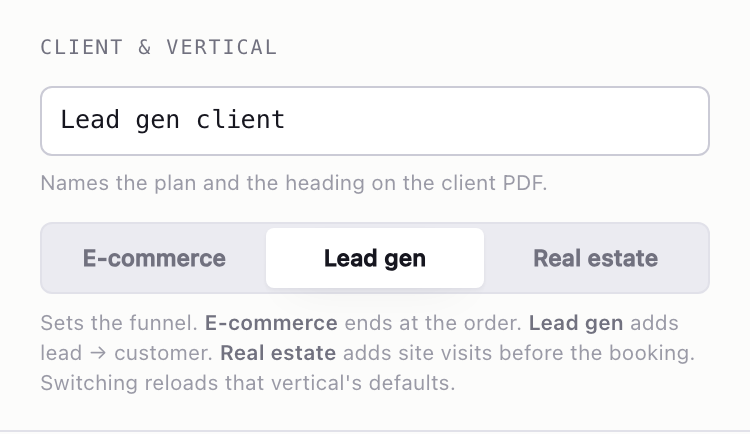
The vertical decides how many steps sit between a click and money:
| Vertical | Funnel | Value you enter |
|---|---|---|
| E-commerce | click → order | Average order value |
| Lead gen | click → lead → customer | Deal value |
| Real estate | click → relevant lead → site visit → booking | Ticket size |
It also renames every label in the read-out, so a real-estate plan talks about site visits and bookings rather than leads and customers.
Switching vertical reloads that vertical's defaults and discards your edits. Pick the vertical first, or save your plan before switching.
Monthly budget, growth, horizon, improvement
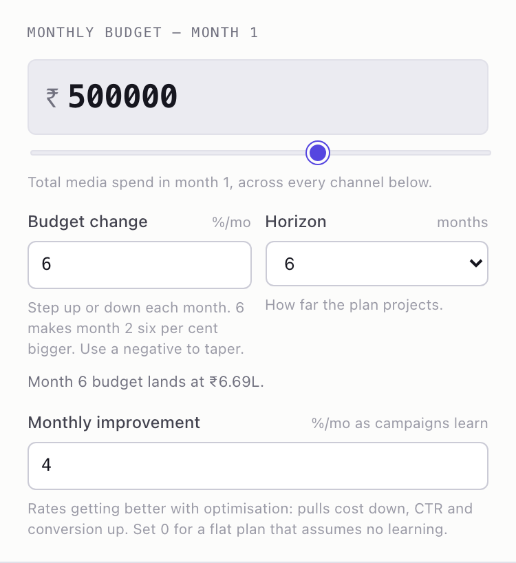
- Monthly budget — month 1 spend across every line. Typing here re-anchors your rates to the new number, because typing a budget means "this is the plan".
- The slider under it moves the budget without re-anchoring. That's how you explore: hold the rates you researched still and see what a bigger or smaller month does to them.
- Budget change %/mo — compounding step for months 2 onward. Negative tapers.
- Horizon — 3, 6, 9 or 12 months of projection.
- Monthly improvement %/mo — how much better the account gets as it learns. One number
standing in for three: CPM falls by it, CTR rises by it, and the conversion rate creeps up at
half that pace. Set it to
0for a flat plan that assumes no learning at all.
Unit economics
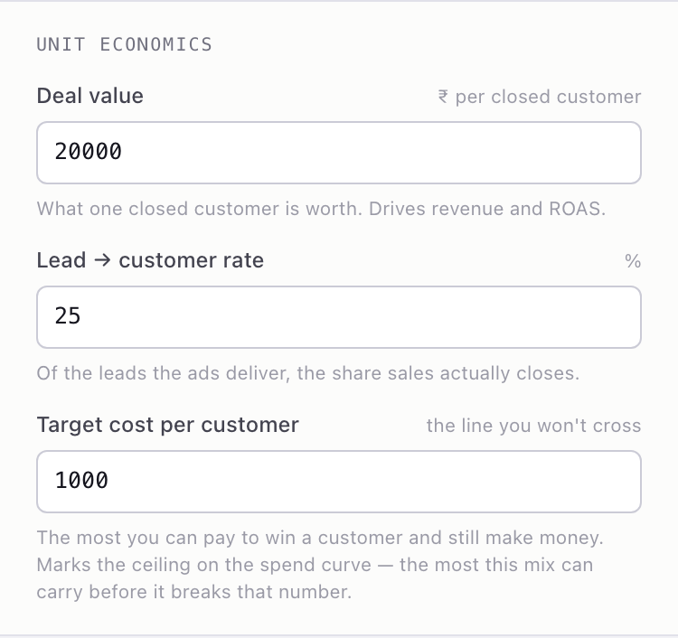
Value drives revenue and ROAS. The intermediate rates (lead → customer, or relevant lead → site visit → booking) are how the ad-side numbers become business-side numbers.
The target cost is the line you won't cross. It draws the dashed ceiling on the spend curve and marks the budget at which this mix stops paying for itself.
The anchor — "rates below are true at"
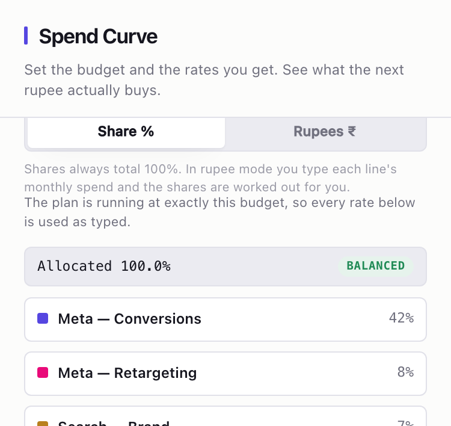
The single most important field in the tool, and the one people skip.
It says: the CPMs and CPCs I typed below were benchmarked at this monthly budget. Run the plan at that number and your rates are used exactly as typed. Run it higher and everything is marked up. The line under the field always tells you where you stand:
The plan is 55% above this, so costs are marked up and conversion marked down to match.
Below it, Share % / Rupees ₹ switches how you enter each line's spend. Shares always total 100%; in rupee mode you type the money and the shares are worked backwards. The allocation bar turns amber with a Normalise button when the shares drift off 100.
Channel lines
Each line is one buying motion. Open one to edit it.
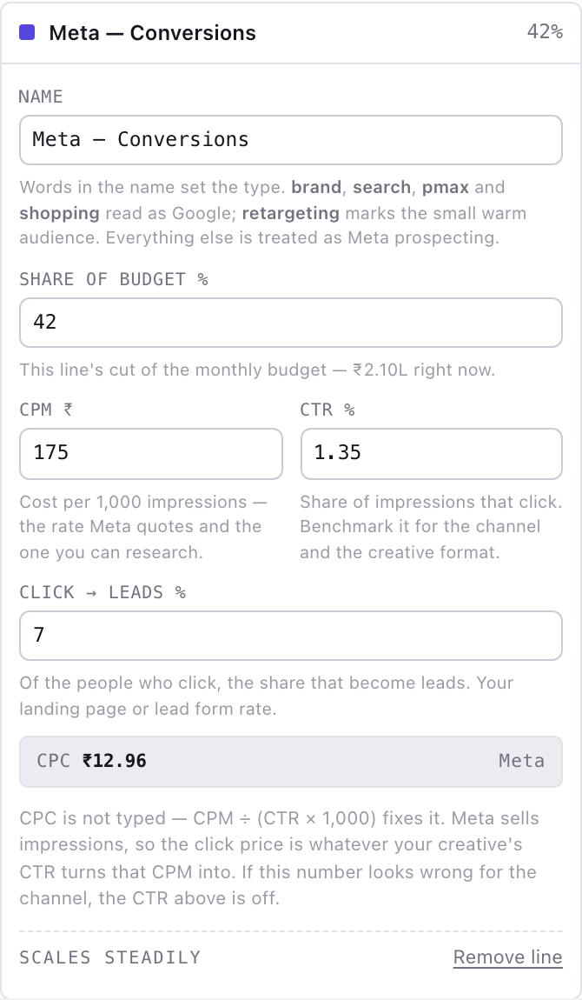
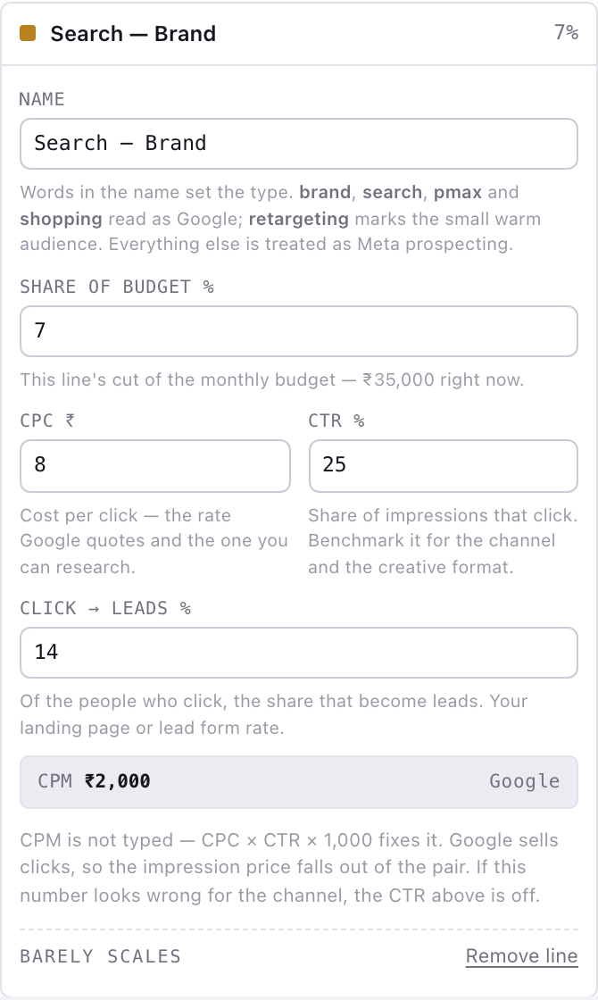
This split is deliberate. Meta sells impressions and publishes CPM; Google sells clicks and publishes CPC. Those are the two numbers you can actually research, so those are the two the tool asks for. The third — the one you'd have to invent — is computed:
Google CPM = CPC × CTR × 1,000
The name of the line is not decoration. It picks both the platform and how hard the line resists more money:
| If the name contains | It becomes | Behaviour |
|---|---|---|
retarget remarket rtg dpa catalog |
Meta retargeting | saturates fastest |
brand (but not non-brand) |
Google brand search | barely scales |
pmax performance max shopping demand gen |
Performance Max | scales steadily |
search keyword non-brand |
Google generic search | scales steadily |
display youtube video banner gdn |
Display | tires quickly |
| anything else | Meta prospecting | scales steadily |
The label at the bottom of each open line tells you which one it landed on. Rename a line and the inputs flip to match — a line renamed from "Meta — Conversions" to "Search — Generic" starts asking for a CPC instead of a CPM.
Saving and resetting
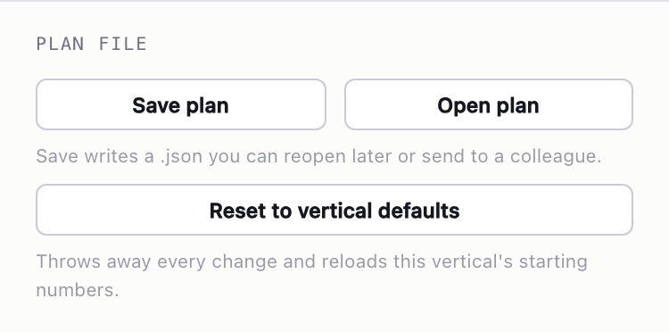
Save plan writes a .json to your machine — the whole plan plus any captured
comparison scenarios. Open plan reads one back. Send the file to a colleague and they see
exactly your numbers. Plans saved before the CPM/CPC change still open; their CTR is worked out
from the old rate pair.
Tab 1
Plan — what month 1 looks like
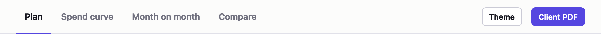
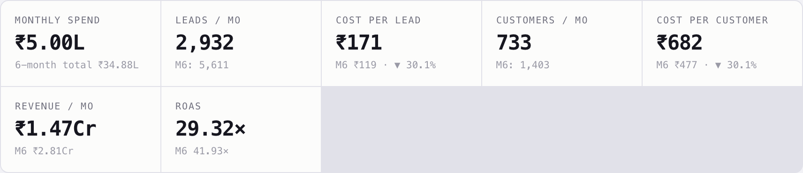
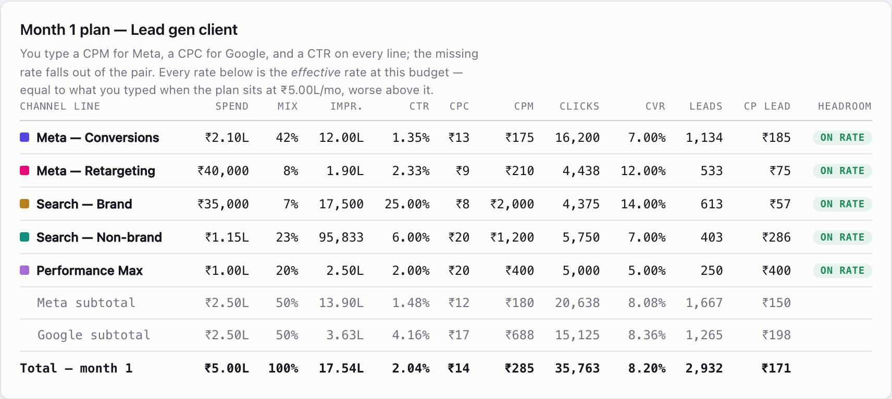
Every rate in this table is the effective rate at this budget — what you'd actually pay, not what you typed. When the plan sits exactly on the anchor they're identical. Above it they're worse. The Headroom column says how hard each line is being pushed:
| Badge | Meaning | What to do |
|---|---|---|
| headroom | under 85% of its anchor share | cheapest place to put the next rupee |
| on rate | 85–125% | working as quoted |
| stretched | 125–180% | paying a premium; watch it |
| over-funded | above 180% | move money out before raising the total |
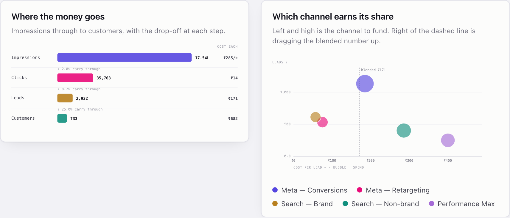
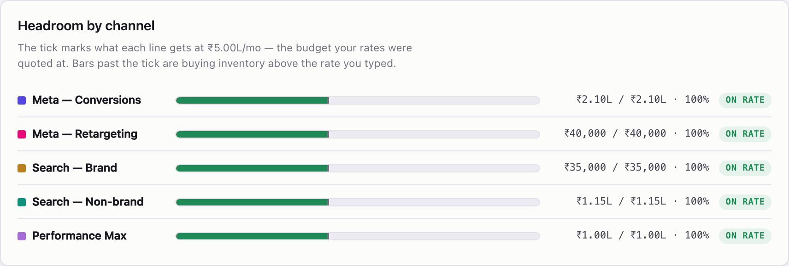
Tab 2
Spend curve — where the money stops working
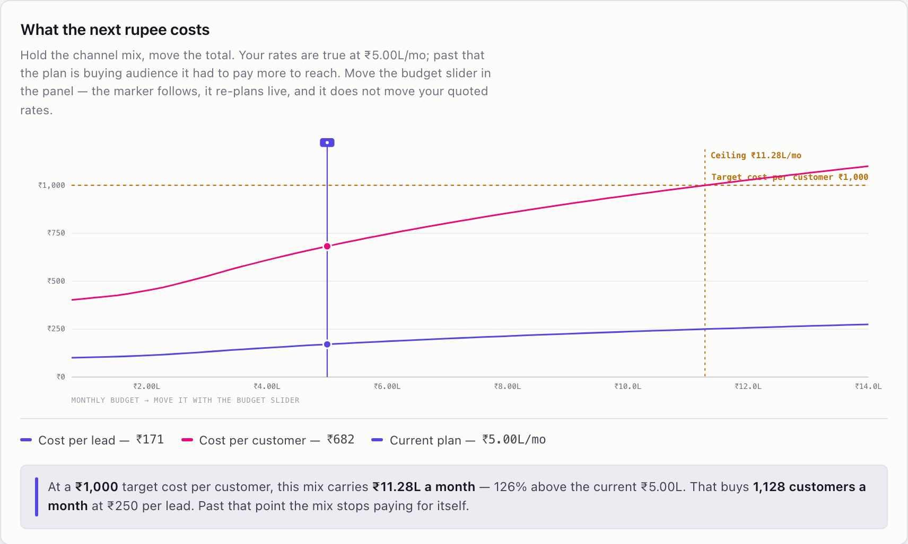
Read it left to right: as budget grows, cost per lead and cost per customer rise, because the mix is buying past the rates it was quoted at. Three things are marked:
- The accent vertical line — where your plan sits right now.
- The dashed horizontal line — your target cost from unit economics.
- The ceiling — the budget where the curve crosses that target. Past it, this mix costs more per customer than you said you could pay.
The chart is read-only. To move the marker, use the budget slider in the deck — it walks the curve without touching your quoted rates, which is exactly what makes the curve mean anything.
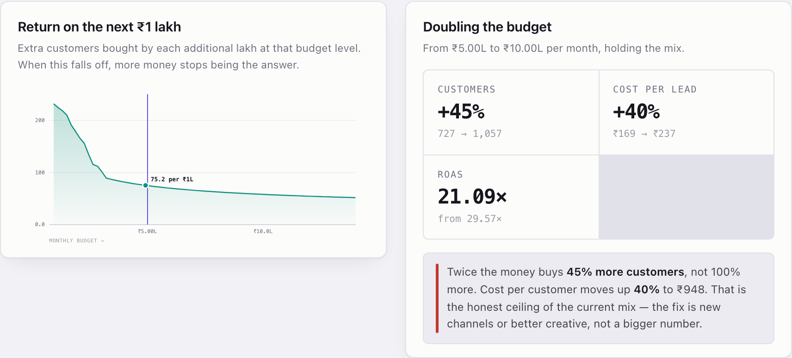
Tab 3
Month on month — the projection
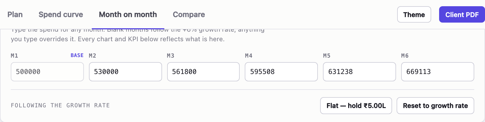
This is where a plan stops being one month and becomes a commitment. Two forces pull against each other across the horizon:
- Growth pushes costs up — each bigger month is further past the anchor.
- Monthly improvement pulls them down — the account learns.
Whichever wins is visible in the trend cards.
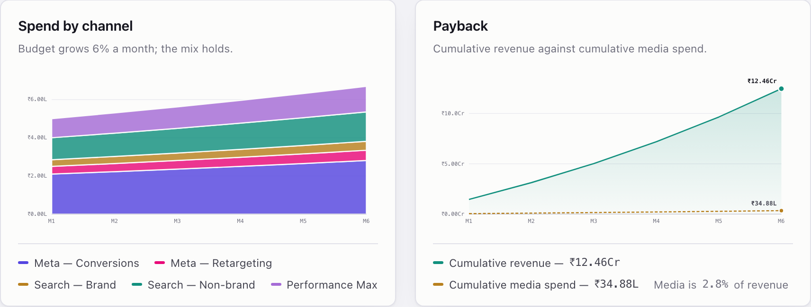
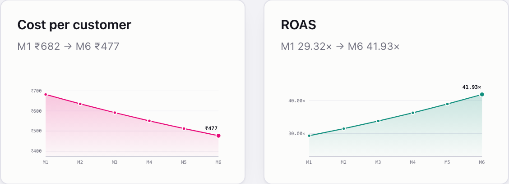
Tab 4
Compare — what more money actually buys
Three slots. Capture the same plan into two or three of them, then give each a different monthly budget. Because every slot keeps the rates you quoted and the anchor you set, the difference between them is purely the effect of budget.
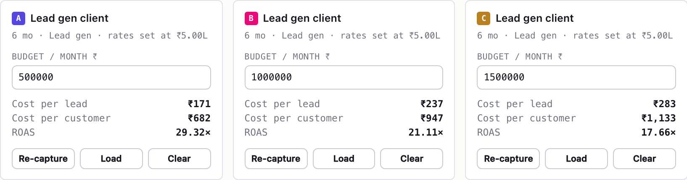
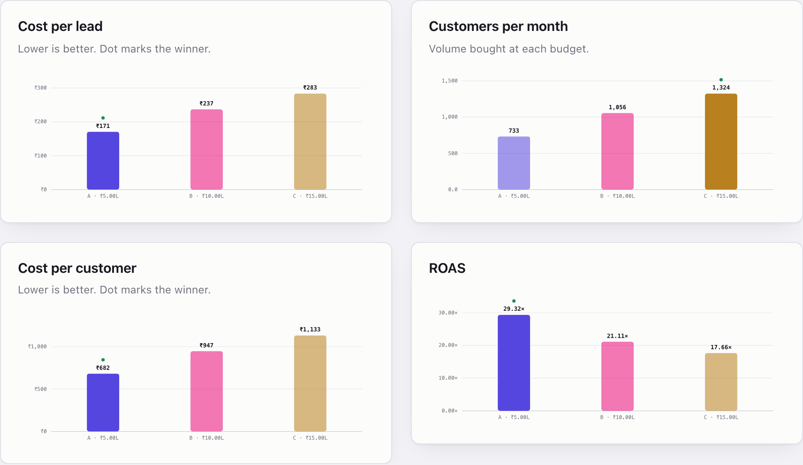
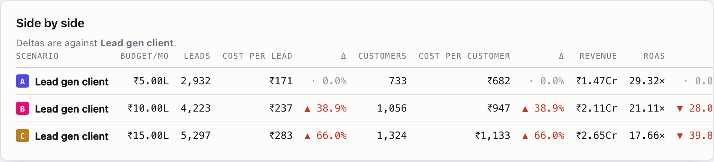
Under the hood
What the maths actually does
Nothing here is a black box. Four steps, applied to every channel line, every month.
1. Load — how far past the anchor is this line?
multiplier = load alpha (clamped between 0.80 and 5)
Each archetype carries three alphas — one for cost, one for click-through, one for conversion. A higher alpha means the line fights back harder when you push money through it. You never type these; the line's name picks the row.
| Archetype | Cost exp. | CTR exp. | Conv. exp. | Reading |
|---|---|---|---|---|
| Meta prospecting | 0.30 | 0.18 | 0.10 | scales steadily |
| Meta retargeting | 0.42 | 0.24 | 0.20 | smallest pool, saturates first |
| Search — brand | 0.08 | 0.04 | 0.04 | capped by query volume, not price |
| Search — generic | 0.28 | 0.10 | 0.14 | scales steadily |
| Performance Max | 0.22 | 0.10 | 0.14 | scales steadily |
| Display / video | 0.16 | 0.20 | 0.16 | tires quickly |
Worked example: a Meta prospecting line running at double its anchor share gets a cost multiplier of 20.30 ≈ 1.23 — a 23% markup on CPM. A brand search line at the same load gets 20.08 ≈ 1.06. Six per cent. That gap is the point.
2. Drift — the account learns
Monthly improvement i compounds over the horizon:
CTR ×= (1 + i)month
conversion rate ×= (1 + i/2)month
Because CPC is derived from CPM and CTR, it improves roughly twice as fast as either — which is what a maturing account actually looks like.
3. Rates — the quoted one leads, the other follows
Meta CPM = typed CPM × cost multiplier × drift, then CPC = CPM ÷ (CTR × 1,000)
Google CPC = typed CPC × cost multiplier × drift, then CPM = CPC × CTR × 1,000
The rate the platform actually sells you is the one that carries the load. The other is whatever CTR makes of it — so on Meta, pushing budget raises the click price twice over: once through the CPM, again through the CTR decay.
4. Volume — down the funnel
impressions = clicks ÷ CTR
leads = clicks × conversion rate
customers = leads × close rate (× site-visit rate for real estate)
revenue = customers × value ROAS = revenue ÷ spend
In practice
Recipes
"What budget should we recommend?"
Set the target cost in unit economics. Go to the Spend curve tab and read the ceiling — the budget where the curve crosses your target. Recommend somewhere below it, and use the marginal chart to show where the returns start flattening.
"The client wants to double spend. Is that sensible?"
Capture the current plan into slot A. Capture again into slot B and set double the budget. The side-by-side table gives you the honest answer in one row: more volume, worse efficiency, by exactly this much.
"Which line should get the next rupee?"
Plan tab → Headroom by channel. Anything showing headroom is cheaper than anything showing stretched. Shift shares before you raise the total.
"We only have benchmarks at a small test budget"
Put the test budget in rates below are true at, then use the slider to raise the plan to the real number. The tool marks everything up from your small-budget rates — which is the correct direction, and the reason the anchor exists.
"Build the client deck"
Open the tab you want, then hit Client PDF and print to PDF. Two things to know: it prints only the tab you're on, and it always prints on white regardless of your theme. So for a full pack, print each tab in turn and merge.
Read before you present
Gotchas
- Typing a budget re-anchors; the slider doesn't. If every line reads on rate no matter what number you type, you're re-anchoring each time. Use the slider to explore.
- Switching vertical wipes your edits and reloads defaults. Save first.
- The name drives the model. A line called "Awareness" is treated as Meta prospecting.
If you meant YouTube, put
youtubein the name. - Shares must total 100%. The allocation bar goes amber and offers Normalise when they don't.
- CTR is a real input now. If a derived CPC or CPM looks wrong for the channel, the CTR is the number to fix — not the rate you researched.
- Defaults are Indian-market starting points, not researched rates for your client. Replace them.
- Nothing is saved automatically. Close the tab and the plan is gone. Use Save plan.
The saturation alphas are calibrated judgement, not measured constants for any one account. They're deliberately conservative. Treat the shape of the curve as the insight and the exact rupee at the third decimal as an estimate.